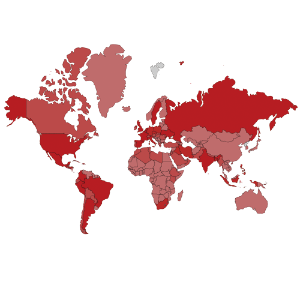
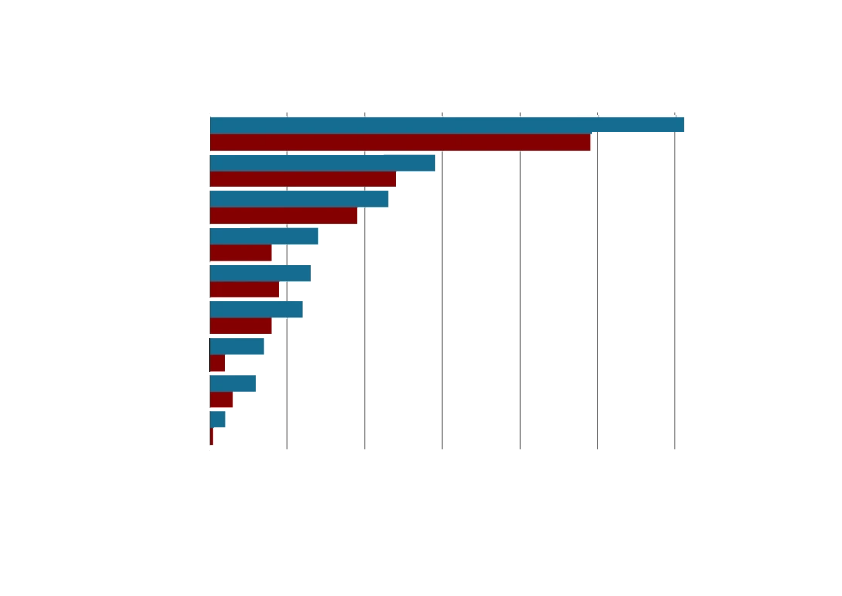

COVID-19 has changed so many things for us now: society, culture, politics, diplomacy, art, sports. The whole world has been damaged by one disease. COVID, what the hell is it.
a path of propagatio . 전파경로
•주된 전파경로는 감염자의 호흡기 침방울(비말)에 의한 전파
•사람
간에 전파되며, 대부분의 감염은 감염자가 기침, 재채기, 말하기, 노래
등을 할 때 발생한 호흡기 침방울(비말)을 다른사람이 밀접접촉(주로
2m 이내)하여 발생
•비말 이외, 표면접촉, 공기 등을
통해서도 전파가 가능하나, 공기전파는 특정 환경에서 제한적으로
전파되는 것으로 알려짐
Fever, cough, loss of taste
SYMPTOM . 증상
• 임상 증상은 무증상, 경증, 중등증, 중증까지 다양
•
주요 증상으로는 발열(37.5℃ 이상), 기침, 호흡곤란, 오한, 근육통,
두통, 인후통, 후각·미각소실
• 그 외에 피로, 식욕감소,
가래, 소화기증상(오심, 구토, 설사 등), 혼돈, 어지러움, 콧물이나
코막힘, 객혈, 흉통, 결막염, 피부 증상 등이 다양하게 나타남
‘바이러스 백신’은 말 그대로 바이러스 자체를 체내에 주입하는 방식의 백신으로 전통적인 백신 제조 방법이다. 그러나 있는 그대로의 바이러스를 사용하는 것은 아니고 돌연변이를 일으켜 약해진 바이러스나 화학물질이나 열을 처리하여 아예 감염시킬 수 있는 능력이 없 바이러스를 사용한다.
TREATMENT . 치료
‘바이러스 벡터 백신’은 인간에게 무해한 다른 바이러스에
코로나바이러스의 일부 단백질 유전자를 떼어 넣어 만든
벡터(운반체)를 이용하는 백신이다.
이는
아데노바이러스를 벡터로 이용하고 있는데, 아데노바이러스의 DNA에
코로나바이러스의 스파이크 단백질 유전자를 끼워 넣고
아데노바이러스가 스스로 복제하는데 필요한 유전자는 삭제하는
방식으로 만들어진다. 그러면 이 아데노바이러스 벡터를 체내에
주입했을 때 코로나바이러스의 스파이크 유전자가 전사, 번역되어
스파이크 단백질을 만들게 되고, 우리 몸은 코로나바이러스 스파이크
단백질에 대한 항체와 기억세포를 만들 수 있게 된다.
RNA VACCINE . 화이자 . 모더나
RNA백신은 우리가 잘 아는 화이자와 모더나의 백신이고 코로나바이러스의 mRNA를 지질 나노입자(lipid nanoparticle, LNP)에 넣어 체내에 주입하는 방식이다.
dNA VACCINE . 화이자 . 모더나
바이러스 없이 DNA를 그대로 전달하는 방법을 사용한다.
DNA백신은 RNA백신과 마찬가지로 유전정보만 알고 있다면 빠르게
백신을 개발할 수 있다는 장점이 있고, RNA보다 안정적이어서
온도변화에 강하다는 장점이 있다.
다만, DNA는 세포로
전달하는 것이 어렵다는 단점이 있어서 일반 주사기를 이용하는 것이
아니라 세포에 일시적으로 전기장을 가해 세포막의 투과성을
증가시켜서 DNA를 세포 내로 집어넣는 전기천공(electroporation)의
방식으로 투여한다.
2019년 12월 중국 우한에서 처음 발생한 이후 중국 전역과 전 세계로 확산된, 새로운 유형의 코로나바이러스(SARS-CoV-2)에 의한 호흡기 감염질환이다. 코로나바이러스감염증-19는 감염자의 비말(침방울)이 호흡기나 눈·코·입의 점막으로 침투될 때 전염된다. 감염되면 약 2~14일(추정)의 잠복기를 거친 뒤 발열(37.5도) 및 기침이나 호흡곤란 등 호흡기 증상, 폐렴이 주증상으로 나타나지만 무증상 감염 사례 빈도도 높게 나오고 있다.
THE RATE OF
SPREAD, DEATH
국내 코로나19 발생·사망 보고현황(’20년 1월 20일 ~ ’23년 8월 30일)
’20년 1월 20일부터 ’23년 8월 30일 까지 총 확진자 수는 34,572,554명, 사망자는 35,605명으로 보고됨*
’20년 1월 5일부터 ’24년 5월 19일 까지 총 확진자 수는 775,522,404명, 사망자는 7,049,617명으로 보고됨＊
사망자 :220,873
완치자 :5,226,427
사망자 :438
완치자 :23,030
사망자 :22,966
완치자 :1,031,785
사망자 :5,899
완치자 :0
사망자 :32,942
완치자 :102,680
사망자 :151,063
완치자 :4,526,975
사망자 :1,634
완치자 :82,621
사망자 :110,617
완치자 :6,301,927
사망자 :9,654
완치자 :157,486
사망자 :4,634
완치자 :80,736
THE PROPAGATION PROCESS - IN KOREA
중국 후베이성 우한에서 원인을
알 수 없는 폐렴 환자가 다수
발생.
대구와 경북 지역을 중심으로 전파되며
전국적으로 확진자가
급증.
이에 따라 사회적 거리두기와 마스크 착용이 본격적으로
권고돰.
첫번째 사망자가
중국에서 보고 됨.
세계보건기구(WHO)는 이
바이러스를 '국제적 공중보건
비상사태(PHEIC)'로 선언
겨울철에 접어들면서
코로나 3차 유행 확대.
WHO는 코로나 19를 '팬더믹(Pandemic)'으로 공식 선언하여 , 전세계적인 대유행을 공표.
한국에서 첫 코로나
확진자 발생.
수도권에서 종교시설과 집회와 관련된 집단 감염이 발생하면서 코로나 2차 확산 시작.
중국 후베이성 우한에서 원인을 알 수 없는 폐렴 환자가 다수 발생.
국내에서 첫 코로나 백신 접종 시작
오미크론 변이에 따른 대규모 유행이 이어지며 정부는 기존의 '사회적 거리두기' 중심 방역에서 '위드 코로나 체제로의 전환 검토.
대구에서 '신천지'와 관련된
집단 감염이 발생하며,
국내 확진자 급증.

델타 변이 바이러스가 국내에 유입되며 빠르게 확산되었고, 이는 새로운 감염 증가세 촉발시킴.
THIS WEB WAS CREATED TO
GIVE YOU
ALL THE INFORMATION
ABOUT
COVID19,
FORM ITS
DEFINITION
TO ITS SYMPTOMS, ITS COPTIING AND THE
CHANGES
IT HAS BROUGHT.
많은 국가들은 한국 보건당국의 코로나19(신종 코로나바이러스 감염증)
검사 처리 속도와 규모에 감탄을 표하였다. 한국의 코로나19 진단검사의
처리량과 신속성은 물론 하루 2번 공식 브리핑 등을 통해 공개하는
정보의 투명성에 대해서도 높게 평가하였다.
어떠한 배경을
기반으로 이러한 대처를 가능하게 했는지, 외신이 한국을 세계최고
보건강국 이라는 평가를 내렸는지 알아보자.
확진자들의 신용카드 기록과 폐쇄회로 화면, 휴대전화 위치 확인
서비스와 교통카드 등 '빅데이터'를 이용해서
확진자들의 동선을 파악.
코로나 확진 시 자신의
이동 경로를 투명하게 진술함.
다른 나라에 비해 우리나라는 배달이 활성화 되어있기에 재택근무나 야외
활동을 줄이라는 지침을 잘 지킬 수 있었음
택배 역시 활성화
되어있기에 야외 활동을 줄일 수 있는 데에 도움이 되었음
각
지역 주변의 보건소에서 확진자 안내문자나 검사 등을 받을 수 있도록
체계화 되어있음
드라이브 스루를 이용한 코로나 검사 => 빠르고 많은 사람들이 검사
받을 수 있도록 조치
입국 심사 시 발열기를
이용하여 발열 증상이 있는 사람을 빠르게 구분함
의료체계 시스템화
거리두기 활성화
<economic growth rate (GDP) >

경제성장률은 보통 3개월이나 1년 치 국내총생산(GDP)의 백분율 변화
또는 생산된 제품과 서비스의 가치로 측정한다.
경제협력개발기구(OECD)에
따르면 코로나19로 미국발 경제위기가 있었던 2009년 이래 세계
경제가 가장 느린 성장세를 보이고 있다.
2월 마지막 주 주요 주식시장은 2008년 금융 위기 이후 최악의
실적을 보였다.
유럽과 미국 증시는 일부 국가들이 코로나19
영향을 최소화하고자 개입하기 시작하면서 약간 상승세를 보이기도
했다.
이를테면 미국 중앙은행은 금리를 전격 인하했다. 이는
이론적으로 대출금리를 내리고 소비를 촉진해 경기를 부양할 수
있다.
worst performance
economic
growth
현재는 코로나로 인한 사망률이 많이 낮아진 상태이지만 코로나로 인해 사회적 분위기, 정치, 일상 등 많은 방면에 변화를 준 주 요인이기도 하다. 그렇기에 코로나의 설명과 통계를 더불어 코로나가 우리 사회에 끼친 영향들에 대한 설명을 중심으로 웹을 제작하고자 한다.
<The changes in the lives of teenagers
after COVID-19>
48.2 %
47.2 %
stress
13~18세 청소년 이들은 48.2%가 학업스트레스가 증가하였다 답하였고 43.8%가 변화없음, 9.5%가 감소되었다고 답하였다.
19~24세 청년 이들은 47.2%가 학업스트레스가 증가하였다 답하였고
45.1%가 변화없음, 7.8%가 감소되었다고 답하였다.
이는 생활리듬이 깨졌다는 이유와 친구들을 만나지 못하게 됨,
온라인 개학 실시 등의 코로나로 인한 변화에 의해 나타난
학업스트레스로 보인다.
전반적인 생활 및 학교생활, 진로, 사회에 대한 신뢰에 대해서는
부정적인 변화가 나타났다.
반면, 가족관계에 대해서는 긍정적
변화가 유의미하게 증가함을 알 수 있다.
with COVID-19 (단계적 일상회복)
About ‘COVID-19’
Contact_
mintcandyeoni@naver.com
코로나19는 여전히 우리 사회 속에 존재하고 있다. 기존의 바이러스보다 전염력과 중증화 가능성이 높은 델타 등 변이 바이러스의 출몰로 아직은 코로나와 함께한다 라는 ‘위드코로나’ 라고 불린다.